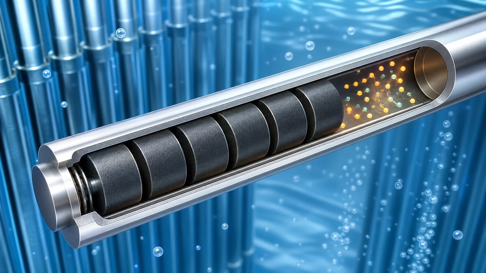
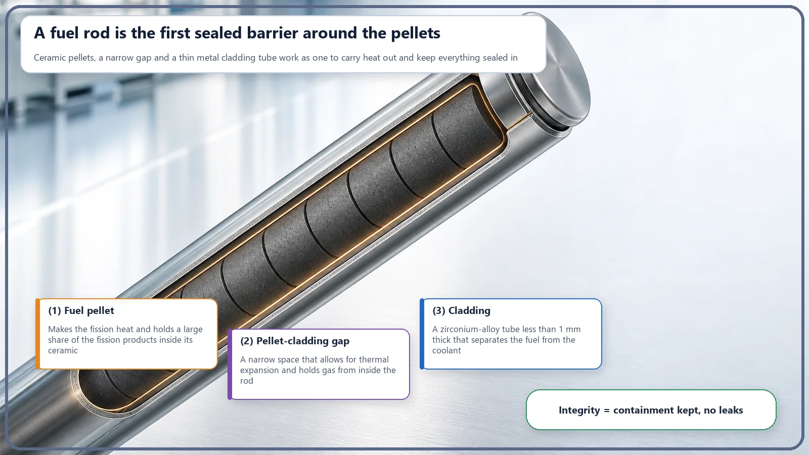
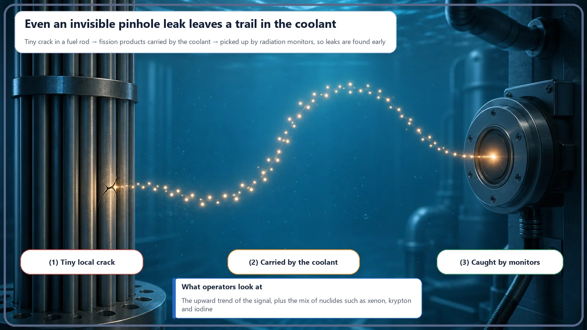

Long-Term Core Behavior & Fuel Cycle · 168
A Metal Skin Less Than a Millimeter Thick Is the First Barrier — Why Fuel Integrity Matters
Like a soda can, a fuel rod does its job perfectly as long as its thin skin stays intact; that intactness is what engineers call fuel integrity.

Fuel integrity means the thin cladding tube around the fuel pellets keeps its seal, holding radioactive fission products inside. The zirconium-alloy cladding is less than a millimeter thick, yet it is the first metal barrier of several. If it develops a tiny leak, the coolant's radioactivity rises slightly and continuous monitoring catches it early.
Inside a nuclear reactor, what is the very first barrier standing between radioactive material and the outside world? The thick concrete containment building? The steel pressure vessel? Those are barriers too, but the one standing in the front row is surprisingly thinner than a fingernail. It's a single thin metal skin, less than a millimeter thick. Today let's talk about why that thin skin matters so much: the concept called fuel integrity.
Picture a can that doesn't leak
Say you take a can of soda out of the fridge. Its metal wall is astonishingly thin. Press a little too hard with your fingers and it dents. Yet we trust that thin skin completely. We expect the drink, and the fizzy carbon dioxide gas, to stay quietly inside. And what if the can had a flaw somewhere, even a pinhole? The fizz would hiss out, and the contents would seep out and leave your hands and the fridge shelf sticky. Thin as it is, as long as it's intact it does its job perfectly, but the moment that intactness breaks, the story changes completely.
Reactor fuel is actually a lot like that can. The thin metal tube that encloses the fuel pellets is called the cladding, and it plays the part of the can's skin. The cladding is a thin tube made of an alloy of a metal called zirconium, less than a millimeter thick. The state in which this thin tube keeps its seal fully intact, the can holding up without leaking, is what we call fuel integrity.
What is locked inside this skin?
So what exactly is this thin skin working so hard to hold in?
When fission happens in the fuel, heavy uranium nuclei split in two, creating a crowd of new nuclei called fission products. The catch is that many of these fragments are radioactive. Those that are gases or evaporate easily (gases like xenon and krypton, and substances like iodine) are especially eager to get out, just as the carbon dioxide in a soda can is always trying to escape.
On top of that, the longer the fuel is used, the more of these gases build up inside the fuel rod, and the internal pressure slowly rises. It's like the gas pushing against the walls of a can you've just shaken. So the cladding isn't a shell that just sits there. It's a thin but remarkably tough component that keeps its seal while withstanding, all at once, the pressure pushing from inside, the high temperature and pressure outside, and a constant stream of radiation.

The front row of several barriers
To keep radioactive material from reaching the environment, a nuclear power plant doesn't rely on just one barrier. It sets up several layers in turn, from the inside out. The innermost fuel pellet itself holds on to a large share of the fission products; next comes this cladding; outside that, the thick reactor pressure vessel and piping; and outside those, the huge containment building. If one is breached, the next one stands in the way, and if that one is breached too, there's still another.
Here the cladding is the first barrier made of metal, and that's exactly why fuel integrity matters. If the front-row barrier holds firm, radioactive material never gets out of the fuel rod in the first place, so the barriers behind it hardly ever get put to the test. If that front row weakens, then even with more barriers still in place, there's correspondingly more to manage, and sooner. That's why special care goes into "keeping the foremost barrier intact."
How do you know if it leaks? The coolant tells you
So if a very small hole or crack forms in this thin skin, how could anyone outside notice? The fuel rods sit deep under water inside the reactor, where no one can look at them.
A clever method comes into play here. When a tiny gap forms in the cladding, the radioactive gases and substances trapped inside seep little by little into the coolant (water) circulating through the reactor. That nudges the coolant's radioactivity slightly above normal. Because the plant monitors the coolant's radioactivity continuously, when the signal from particular substances creeps up, operators can realize fairly early, "Ah, a fuel rod somewhere has started to leak." It's the same principle as spotting a sticky trail and thinking, "Hm, this can has leaked somewhere."
One thing should be clear, though: a small leak does not mean a major accident or a large release. A tiny leak from a few fuel rods releases only a very small amount, several barriers still stand behind it, and above all it is monitored and managed early like this. A slight loss of fuel integrity and severe damage to the core are completely different matters in scale, and it's worth keeping that in mind.

A few points that are easy to mix up
First, it's easy to treat fuel integrity and multiple barriers as the same thing, but their focus differs. Multiple barriers describes the overall picture, "there are several layers of barriers," while fuel integrity focuses on whether the innermost layer, the fuel and cladding themselves, is intact. In other words, fuel integrity is the job of keeping the first of those layers whole.
Second, as mentioned above, don't lump a loss of integrity together with core damage. A pinhole in a cladding tube and severe damage to the whole core are completely different issues, in scale and in response. Not reading "some fuel leaked" as the worst case straight away, and also not dismissing it as "it's thin, so it doesn't matter": having an accurate scale between those two is how you really understand this concept.
Today's takeaways
- Fuel integrity is the state in which the thin metal tube around the fuel pellets (the cladding) fully keeps its sealing function, holding radioactive fission products inside the fuel.
- The cladding is less than a millimeter thick, but it is a precision component that keeps its seal while withstanding the pressure of gases building up inside along with high temperature, high pressure and radiation outside.
- Among the several barriers set up in layers, the cladding is the first barrier made of metal; while this front row is intact, radioactive material never gets out of the fuel rod in the first place.
- If the cladding leaks, trapped radioactive material flows little by little into the coolant and raises its radioactivity, and the plant monitors this continuously to catch leaks early.
- A tiny leak, however, is a completely different matter in scale from a large release or core damage, and fuel integrity is a concept focused on the intactness of the innermost layer, not the whole set of barriers.
We've seen how a single thin skin manages to serve as the first barrier. What strains that skin bears over long years of operation, and especially how it changes in a hot environment, how this thin metal reacts when it meets time and heat, is a story worth looking at more deeply another time.